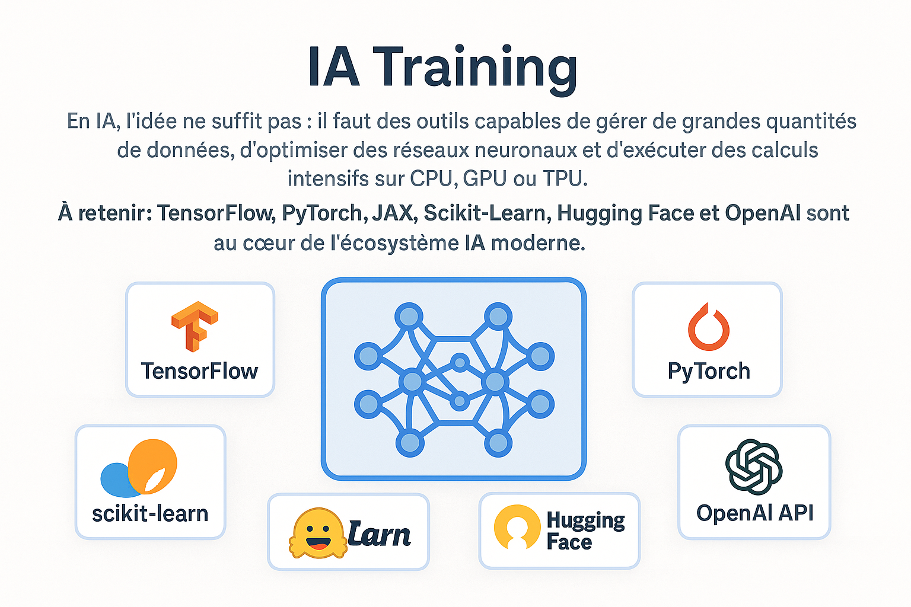

TensorFlow
Google’s framework for deep learning, distributed computing and GPU/TPU training.
The essential frameworks used to train, optimize and deploy modern AI models.
In AI, ideas are not enough: you need tools capable of handling large datasets, optimizing neural networks, and running intensive computation on CPU, GPU or TPU. The frameworks below are the “toolbox” of data scientists, AI engineers and researchers.
Key takeaway: TensorFlow, PyTorch, JAX, Scikit-Learn, Hugging Face and OpenAI are at the core of the modern AI ecosystem.
Google’s framework for deep learning, distributed computing and GPU/TPU training.
The most widely used framework for research, generative AI and LLM development.
Google’s numerical engine: ultra-fast, perfect for high-level mathematics and optimization.
The reference for classical machine learning: regression, clustering, SVM, ML pipelines.
Complete ecosystem for open-source models: Transformers, diffusion models, datasets.
Advanced API to build agents, assistants, reasoning systems and generative AI apps.